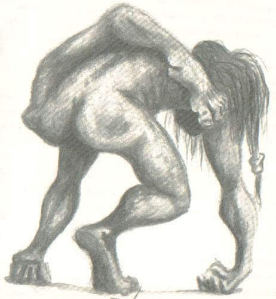

El Invunche
El Invunche es una de las figuras más perturbadoras del folclore del sur de Chile, especialmente en las leyendas de la isla de Chiloé. No es un espíritu del bosque ni un simple espectro nocturno: es una criatura creada, transformada y torcida por la voluntad humana y por pactos que no pertenecen al mundo ordinario. No nace monstruo. Se convierte en uno. La tradición cuenta que el Invunche es un niño robado o entregado voluntariamente a brujos, quienes lo deforman mediante rituales oscuros hasta convertirlo en guardián de sus secretos. Su cuerpo es alterado de forma antinatural: una pierna pegada a la espalda o torcida hacia atrás, el cuello girado hasta mirar en dirección contraria, la lengua partida o extendida para emitir sonidos incomprensibles. Su caminar es torpe, casi imposible, pero constante. Habita en cuevas ocultas, en grutas donde se reúnen las fuerzas que no deben ser vistas. Es el centinela, el primero y último obstáculo para quien intente acercarse a aquello que los brujos protegen.

Comportamiento
El Invunche no vaga libremente como otros entes. No ronda aldeas ni acecha desde la distancia. Permanece donde fue colocado: custodiando la entrada de la cueva, inmóvil durante horas, escuchando cada crujido del bosque. Su función no es perseguir, sino impedir el paso. Se dice que quien intenta cruzar el umbral que él protege queda paralizado por el miedo antes siquiera de enfrentarlo. Su sola presencia es una advertencia: más allá de ese punto, el conocimiento y el poder tienen un precio irreversible. Algunos relatos aseguran que el Invunche puede emitir gemidos o chillidos que no parecen humanos. Otros afirman que apenas se mueve, pero que sus ojos siguen cada sombra con una conciencia inquietante. No necesita atacar; su figura torcida es suficiente para quebrar la voluntad de quien lo mire demasiado tiempo.
El simbolo detras del mounstro
A diferencia de otras entidades, el Invunche no es un espíritu protector ni un demonio independiente. Es el resultado de la manipulación, la corrupción y el deseo de poder. Representa el límite que no debe cruzarse. En muchas versiones, los brujos lo alimentan y mantienen con vida para que cumpla su función de guardián. No habla como los hombres, no piensa como ellos; su humanidad ha sido retorcida hasta convertirse en algo distinto. El Invunche encarna el sacrificio forzado, el secreto enterrado y la transformación irreversible. Es la prueba de que ciertos pactos dejan cicatrices que no pueden deshacerse.

La ira del Invunche
Las leyendas advierten que mirar directamente al Invunche demasiado tiempo puede provocar enfermedad, locura o desgracia. No porque lance un hechizo evidente, sino porque hay algo en su figura que desafía el orden natural. Verlo es comprender que el mundo no siempre sigue las reglas conocidas. Quienes aseguran haberlo encontrado hablan de una sensación de opresión, de un silencio pesado que cae sobre el entorno. El bosque mismo parece contener la respiración. Y cuando uno retrocede, la criatura permanece ahí, inmóvil, como si nunca hubiera existido… pero dejando claro que el límite fue tocado.
El Invunche no protege la naturaleza ni concede favores. Protege secretos. Es el recordatorio de que hay conocimientos que exigen un precio y que no toda transformación conduce a algo superior. Algunas solo conducen a la pérdida. Si alguna vez un sendero termina en una cueva demasiado silenciosa, si el aire se vuelve denso y el instinto te pide que retrocedas… quizá no sea simple imaginación. Tal vez hay algo vigilando la entrada. Algo que ya no es humano.